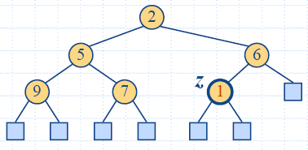

| Algorithm PriorityQueueSort(S,
P): Input: A sequence S storing n elements, on which a total order relation is defined, and a priority queue P, that compares keys using the same total order relation Output: The sequence S sorted by the total order relation while !S.isEmpty() do e <- S.removeFirst() {remove an element e from S} P.insertItem(e,e) {the key is the element itself} while !P.isEmpty() do e <- P.minElement() {get a smallest element from P} P.removeMin() {remove this element from P} S.insertLast(e) {add the element at the end of S} |
| Operation |
Output |
Priority Queue |
| insertItem(5,A) |
- |
{(5,A)} |
| insertItem(9,C) | - |
{(5,A),(9,C)} |
| insertItem(3,B) | - |
{(3,B),(5,A),(9,C)} |
| insertItem(7,D) | - |
{(3,B),(5,A),(7,D),(9,C)} |
| minElement() |
B |
{(3,B),(5,A),(7,D),(9,C)} |
| minKey() |
3 |
{(3,B),(5,A),(7,D),(9,C)} |
| removeMin() |
- |
{(5,A),(7,D),(9,C)} |
| size() |
3 |
{(5,A),(7,D),(9,C)} |
| minElement() |
A |
{(5,A),(7,D),(9,C)} |
| removeMin() |
- |
{(7,D),(9,C)} |
| removeMin() | - |
{(9,C)} |
| removeMin() | - |
{} |
| removeMin() | ERROR |
{} |
| isEmpty() |
true |
{} |
bool operator<(const Point& p1, const Point& p2)
{ if (p1.getX() == p2.getX()) return p1.getY() < p2.getY();
else return p1.getX() < p1.getX();
}
class LexCompare {
public:
int operator()(Point a, Point b) {
if (a.x < b.x) return –1
else if (a.x > b.x) return +1
else if (a.y < b.y) return –1
else if (a.y > b.y) return +1
else return 0;
}
};
html-7.3
(Compare)Point p(2.3, 4.5);
Point q(1.7, 7.3);
LexCompare lexCompare;
if (lexCompare(p, q) < 0) cout << “p less than q”;
else if (lexCompare(p, q) == 0) cout << “p equals q”;
else if (lexCompare(p, q) > 0) cout << “p greater than q”;
|
|
|
|
| Sequence S |
Priority Queue P (unsorted sequence) |
|
| Input |
(7,4,8,2,5,3,9) |
() |
| Phase 1 O(n) |
(4,8,2,5,3,9) (8,2,5,3,9) (2,5,3,9) (5,3,9) (3,9) (9) () |
(7) (7,4) (7,4,8) (7,4,8,2) (7,4,8,2,5) (7,4,8,2,5,3) (7,4,8,2,5,3,9) |
| Phase 2 O(n2) |
(2) (2,3) (2,3,4) (2,3,4,5) (2,3,4,5,7) (2,3,4,5,7,8) (2,3,4,5,7,8,9) |
(7,4,8,5,3,9) (7,4,8,5,9) (7,8,5,9) (7,8,9) (8,9) (9) () |
| Sequence S |
Priority Queue P
(sorted sequence) |
|
| Input |
(7,4,8,2,5,3,9) |
() |
| Phase 1 O(n2) |
(4,8,2,5,3,9) (8,2,5,3,9) (2,5,3,9) (5,3,9) (3,9) (9) () |
(7) (4,7) (4,7,8) (2,4,7,8) (2,4,5,7,8) (2,3,4,5,7,8) (2,3,4,5,7,8,9) |
| Phase 2 O(n) |
(2) (2,3) (2,3,4) (2,3,4,5) (2,3,4,5,7) (2,3,4,5,7,8) (2,3,4,5,7,8,9) |
(3,4,5,7,8,9) (4,5,7,8,9) (5,7,8,9) (7,8,9) (8,9) (9) () |


|
 |
 |
 |
 |
 |
 |
| Function |
Time |
| size(),
isEmpty() |
O(1) |
| minElement(),
minKey() |
O(1) |
| insertItem(k,e) |
O(log n) |
| removeMin() |
O(log n) |